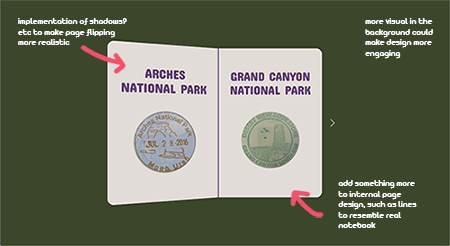
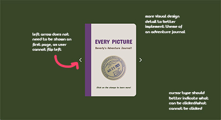

Final Project Expert Review & Report
First Critique
The first person I did my visual design critique with was the graduate student TA. As someone experienced with code, she was able to give me some feedback that I could consider implementing through the lens of JavaScript.
One thing that Nikita agreed was strong was the idea of my project, and the page flipping. She believed that to improve my project, I could take it one step further and make my animation more realistic so that it wouldn't look so flat. In addition, I could further design the internal pages of the notebook as well so that the design is overall more cohesive with the theme, instead of resembling a blank template. I also mentioned that I had wanted to include more visuals in terms of the imagery in my project, and she also agreed that doing so would add more to my project in terms of its visual design.
Second Critique
The second person I did my visual design with was Mindy, who was a recent UC Davis graduate in computer science, and now works as a UX/front-end designer. I believe that she is qualified to give me feedback on my project because she also has knowledge on doing similar projects, and can give me valuable opinions on changes I could implement that are within my skill level. She is also an excellent artist, I believe her artist's eye could help me greatly improve my project in terms of small details.
What we first discussed was my studio project, and what she liked about what I had in my project so far. She mentioned that the page flipping animation was done well, because it was not too slow or too fast, and that the font size fits well within the standards. The overall design is simple but clean, and she liked that I had implemented logical hover actions such as the moving stamps.
Secondly, I showed her the mockups of the changes I plan to implement to my design. Mindy agreed that the design looked better when what I initially had on the overlays was implemented onto the actual journal pages instead, as it more closely resembled the structure of an actual notebook. She believed that having my additional images appear as a popup was also a better UX choice, as popups are often considered intrusive to the user. Another thing she thought was a good design change was having the background change depending on what stamp the user was hovering over, because it helps the reader envision the actual place and keeps their interest. Lastly, Mindy also liked that I plan to have an overall more detailed design, because it adds to the story of the project without making the page look too busy.
We then discussed what improvements I could make on my project. She thought that I could try to be more consistent with my cursor type, because often it remains as the default cursor even when hovering over something clickable. Changing this could improve the usability by indicating to the user that something can be interacted with. Mindy also mentioned how the close button of my popup should be on the right side to follow convention. Similarly, she mentioned that removing the cover page left arrow and back page right arrow would simplify my UX, as they are not meant to be interacted with. Another thing she brought up that could improve my UX was including some kind of indicator on what page the user was on, to make it easier for the user to return to a page since it is currently not ordered in any system.
